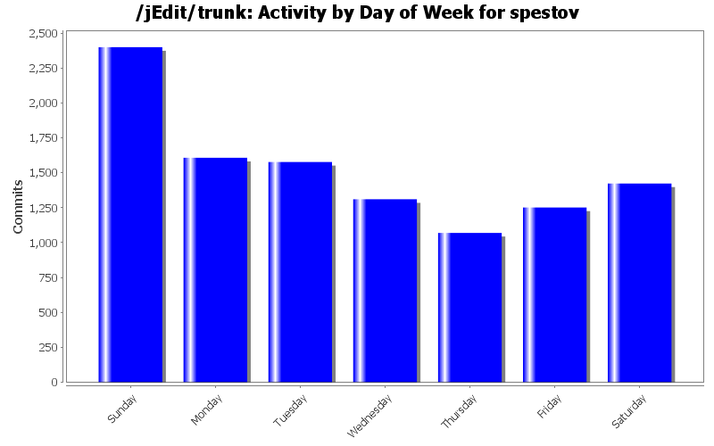

| Directory | Changes | Lines of Code | Lines per Change |
|---|---|---|---|
| Totals | 10636 (100.0%) | 317248 (100.0%) | 29.8 |
| modes/ | 864 (8.1%) | 68430 (21.6%) | 79.2 |
| org/gjt/sp/jedit/ | 2035 (19.1%) | 50500 (15.9%) | 24.8 |
| org/gjt/sp/jedit/textarea/ | 896 (8.4%) | 33697 (10.6%) | 37.6 |
| org/gjt/sp/jedit/gui/ | 957 (9.0%) | 27204 (8.6%) | 28.4 |
| doc/users-guide/ | 429 (4.0%) | 24889 (7.8%) | 58.0 |
| doc/ | 1641 (15.4%) | 13009 (4.1%) | 7.9 |
| org/gjt/sp/jedit/buffer/ | 288 (2.7%) | 11435 (3.6%) | 39.7 |
| installer/ | 210 (2.0%) | 9394 (3.0%) | 44.7 |
| org/gjt/sp/jedit/browser/ | 402 (3.8%) | 8727 (2.8%) | 21.7 |
| org/gjt/sp/jedit/options/ | 275 (2.6%) | 8509 (2.7%) | 30.9 |
| bsh/ | 327 (3.1%) | 8341 (2.6%) | 25.5 |
| org/gjt/sp/jedit/search/ | 314 (3.0%) | 7317 (2.3%) | 23.3 |
| org/gjt/sp/jedit/syntax/ | 255 (2.4%) | 6441 (2.0%) | 25.2 |
| org/gjt/sp/jedit/pluginmgr/ | 171 (1.6%) | 5695 (1.8%) | 33.3 |
| com/microstar/xml/ | 6 (0.1%) | 4894 (1.5%) | 815.6 |
| org/gjt/sp/jedit/io/ | 188 (1.8%) | 4496 (1.4%) | 23.9 |
| org/gjt/sp/jedit/help/ | 61 (0.6%) | 2289 (0.7%) | 37.5 |
| macros/Java/ | 16 (0.2%) | 2053 (0.6%) | 128.3 |
| org/gjt/sp/util/ | 51 (0.5%) | 1883 (0.6%) | 36.9 |
| org/gjt/sp/jedit/menu/ | 25 (0.2%) | 1768 (0.6%) | 70.7 |
| org/gjt/sp/jedit/print/ | 65 (0.6%) | 1281 (0.4%) | 19.7 |
| macros/Misc/ | 25 (0.2%) | 1256 (0.4%) | 50.2 |
| com/loomcom/ant/tasks/jarbundler/ | 2 (0.0%) | 1242 (0.4%) | 621.0 |
| org/gjt/sp/jedit/msg/ | 49 (0.5%) | 1138 (0.4%) | 23.2 |
| doc/news42/ | 16 (0.2%) | 1038 (0.3%) | 64.8 |
| / | 68 (0.6%) | 865 (0.3%) | 12.7 |
| doc/tips/ | 173 (1.6%) | 857 (0.3%) | 4.9 |
| org/gjt/sp/jedit/indent/ | 40 (0.4%) | 851 (0.3%) | 21.2 |
| jars/QuickNotepad/ | 46 (0.4%) | 819 (0.3%) | 17.8 |
| jars/MacOS/ | 32 (0.3%) | 815 (0.3%) | 25.4 |
| macros/Text/ | 29 (0.3%) | 811 (0.3%) | 27.9 |
| macros/Files/ | 19 (0.2%) | 742 (0.2%) | 39.0 |
| macros/Editing/ | 11 (0.1%) | 727 (0.2%) | 66.0 |
| jars/MacOS/macos/menu/ | 5 (0.0%) | 630 (0.2%) | 126.0 |
| bsh/commands/ | 169 (1.6%) | 599 (0.2%) | 3.5 |
| jars/MacOS/macos/ | 7 (0.1%) | 530 (0.2%) | 75.7 |
| macros/Properties/ | 9 (0.1%) | 451 (0.1%) | 50.1 |
| gnu/regexp/ | 40 (0.4%) | 316 (0.1%) | 7.9 |
| macros/Interface/ | 14 (0.1%) | 273 (0.1%) | 19.5 |
| org/gjt/sp/jedit/tips/ | 96 (0.9%) | 249 (0.1%) | 2.5 |
| startup/ | 9 (0.1%) | 200 (0.1%) | 22.2 |
| org/gjt/sp/jedit/proto/jeditresource/ | 7 (0.1%) | 175 (0.1%) | 25.0 |
| doc/FAQ/ | 22 (0.2%) | 144 (0.0%) | 6.5 |
| jars/LatestVersion/ | 11 (0.1%) | 132 (0.0%) | 12.0 |
| doclet/ | 6 (0.1%) | 120 (0.0%) | 20.0 |
| properties/ | 1 (0.0%) | 7 (0.0%) | 7.0 |
| macros/Misc/Properties/ | 3 (0.0%) | 4 (0.0%) | 1.3 |
| macros/Search/ | 9 (0.1%) | 3 (0.0%) | 0.3 |
| jars/Firewall/ | 10 (0.1%) | 2 (0.0%) | 0.2 |
| org/objectweb/asm/ | 10 (0.1%) | 0 (0.0%) | 0.0 |
| org/gjt/sp/jedit/icons/ | 217 (2.0%) | 0 (0.0%) | 0.0 |
| icons/ | 2 (0.0%) | 0 (0.0%) | 0.0 |
| bsh/reflect/ | 1 (0.0%) | 0 (0.0%) | 0.0 |
| bsh/collection/ | 2 (0.0%) | 0 (0.0%) | 0.0 |
add bug fix to change log
12 lines of code changed in 1 file:
Fix a deadlock
1 lines of code changed in 1 file:
typoscript syntax highlighting from neil bertram
9 lines of code changed in 11 files:
added typoscript mode from neil bertram
84 lines of code changed in 2 files:
Select to Marker was broken
13 lines of code changed in 2 files:
potential workaround for a negative array size bug; removed kupee's broken chunk caching code
6 lines of code changed in 3 files:
back out kupee's read only file change since it was broken
34 lines of code changed in 3 files:
JEditBuffer class
397 lines of code changed in 17 files:
*** empty log message ***
1 lines of code changed in 1 file:
factored out editing substrate into a new JEditBuffer class
3529 lines of code changed in 25 files:
bug fix
5 lines of code changed in 2 files:
fix completion of absolute paths
110 lines of code changed in 6 files:
directory chooser supports multiple selection
57 lines of code changed in 3 files:
installer fix: startup script on MacOS now includes Cocoa classes in classpath
17 lines of code changed in 2 files:
fix ../ in file system browser
3 lines of code changed in 2 files:
file system browser patches from nol and david chan
85 lines of code changed in 4 files:
fix folding bug from nol
5 lines of code changed in 3 files:
fix double indent of brackets in Java code
22 lines of code changed in 6 files:
don't beep on EOL clicks in read only buffers; better file system browser completion
182 lines of code changed in 10 files:
various fixes
0 lines of code changed in 7 files:
(1248 more)